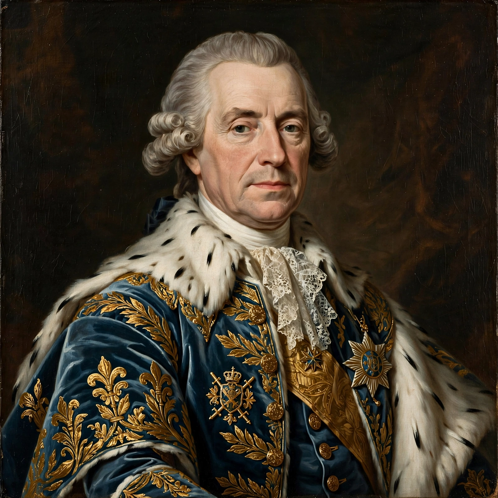

| Born | 11 December 1724, Drogenbos |
|---|---|
| Died | 16 February 1799, Munich |
| Reign | Elector Palatine 1742-1777; Elector of Bavaria 1777-1799 |
| House | Wittelsbach |
Charles Theodore (1724-1799) was Elector Palatine from 1742 and, from 1777, Elector of Bavaria, uniting the Wittelsbach lands.
Rule in the Palatinate
Raised in Mannheim, he made its court a centre of music and learning, founded academies, and built Schwetzingen Palace. His reign saw enlightened reforms alongside heavy court expenditure.
Bavaria
On inheriting Bavaria in 1777 he tried, with Emperor Joseph II, to exchange parts of it for the Austrian Netherlands, provoking the War of the Bavarian Succession (1778-79) and lasting Bavarian distrust. He founded Munich's English Garden era developments and left Bavaria to Maximilian Joseph on his death.
Legacy
Heidelberg's Karl Theodor Bridge and Mannheim's cultural institutions commemorate a ruler remembered as a patron of the arts but an unpopular absentee in Munich.